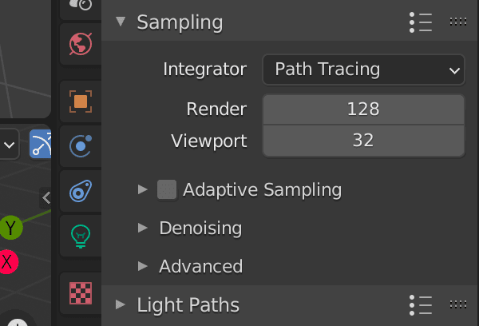
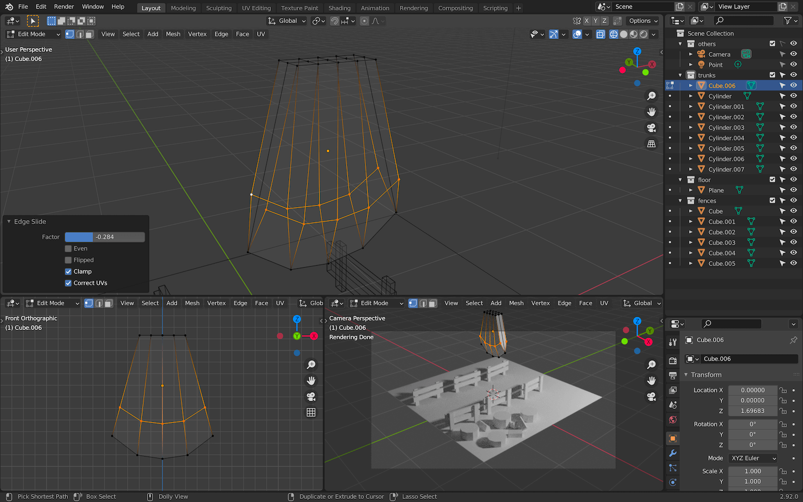

Introduction
In this lesson, we will learn how to create a scene like the one on the home page of the Three.js Journey website. We are going to create a small landscape with a path leading to a magical portal with some objects along the way like fences, trees, rocks. When you are done, you will be able to use what you've learned to create rooms like the ones on Three.js Journey. Or anything else!
And, to make our scene look its best, we are going to use a technique called baking.
Baking
When you do a render in a 3D software like Blender, it usually looks better than the model you import into Three.js, no matter how hard you try to get the exact same lighting and colors. This is because of the technique used while making the render.
Ray Tracing consists of casting multiple rays toward each pixel of the render. These rays start with the geometry we are rendering. Next, they test the direction of each light in the scene to see which part of the geometry is illuminated as well as to test whether the directions of the light bouncing off the geometry are colliding with other objects in the scene. Then, for each of these collisions, more rays are being cast as they bounce off other objects. And it goes on and on like this multiple times. All of the information collected by these collisions is then computed to define the final color of that pixel.
The goal is to simulate real-life lighting and enable visual effects like indirect lighting and soft shadows. As an example, if you place a red object close to a white object, you'll see the white object being tinted with red because rays are bouncing from the red surface to the white surface. In the same way, you'll see that the red object looks brighter when the surface is close to the white object.
This process results in a beautiful realistic render, but doing one render can take many minutes, even hours.
When we are doing renders with WebGL, we need to do it as fast as possible in order to get a good frame rate. We don't have the luxury to spend minutes on just one render. For this reason, rendering in WebGL uses cheaper techniques that don't look as good but at least keep a decent frame rate.
The idea of baking is that we save those Ray Tracing renders into textures that we then use in WebGL instead of using the classic render techniques provided by Three.js.
Here is an example of baked texture:
And here is the result in Three.js:
There is no light, no real-time shadows. It's just the texture you see in the above example being placed on the geometries.
This way, we will see the Ray Tracing renders directly on the Meshes, and it looks awesome. And when we move around the scene, the performance will be great because all we did was to display a texture on a geometry.
Unfortunately, there are some drawbacks:
- We have to bake everything in the 3D software and it's a long process.
- We have to load the textures and if you have a complex scene with a lot of objects, you're going to need a lot of textures. This is bad for loading but it can also result in a short freeze at the beginning of the experience because we need to load those textures into the GPU.
- The lights aren't dynamic. We can't move the lights, and we can't change their intensity or color in real time. We have to do it in the 3D software and re-bake everything.
Choosing to use baking or not is up to you and the project. Keep in mind that you can still mix baked and non-baked materials but it's hard to keep a homogeneous result.
Process
To create that baked scene, we need to go through multiple steps:
- Create the scene in 3D software.
- Optimize all the objects because we need clean geometries and only the surfaces we can see.
- UV unwrap everything.
- Bake the render into texture(s).
- Export both the scene and the texture(s). If we do this, we are going to have just one big texture. But, we can have multiple textures if there are a lot of objects and we want better quality.
- Import everything in Three.js and apply the texture on the mesh.
As a bonus, we will also add some details in Three.js to give more life to the scene like a cool portal effect with fireflies floating around.
Blender
We are going to use Blender to create our scene, bake it, and export it.
If you don't know Blender yet, you should follow the previous lesson dedicated to it. Assuming you now know the basics of Blender, the following steps are going to be a little more direct. Nevertheless, each part will be explained. Take your time and make sure to get everything right before moving forward.
If you are familiar with Blender and concepts like UV unwrapping, you can try to diverge from the lesson and create your own scene. If you're not familiar, you should try to follow the steps exactly. Then, once the project is over, you can try on your own and create your dream scene.
In this lesson, I'll be using the 2.92.0 version of Blender, but you'll probably use a more recent version. Keep an eye on potential changes in the interface or in the shortcuts.
Setup
To begin, we create a new Blender file. The default setup is the one we defined in the Blender lesson but you can use any setup you like.
If you want the same setup, you can also use the portal.blend file in the starter:
A Point Light is already present in the scene with the following parameters.
If the parameters are different from yours, you might be using Eeevee as the Renderer Engine. You can change it now. We will be changing it anyway a little further down.
Start by deleting the default cube or any default object you have in the scene, but keep the light. Use X to delete objects.
You can now save the file. During the rest of the lesson, remember to save regularly.
Floor
We are going to start with the floor.
Create a simple plane with Shift + A
Scale that plane so that it covers 4 units. You can look at the grid on the floor of the scene to see what 4 units looks like. Also, those units can be anything you want. Actually, you might see something like 4m because your Blender is configured to use meters. This doesn't matter because 4 units in Blender will result in 4 units in Three.js.
To do that, you can change its size in the small menu that shows up when creating it:
You can also scale it using S after you've created it (you can use CTRL to round the value):
Or you can go to the Edit Mode with TAB and then scale it the same way:
The result will actually be slightly different according to which technique you used. If you scale the object while not using the Edit Mode, you'll apply a transformation on the object itself and not on the geometry.
This might become a problem later but, later on, we are going to fix it anyway for every object. So use the technique you prefer.
Fences
For the first objects in the scene, we can start with the fences. They are simple to create and will give some life to our scene.
We are going to create 2 flat boxes for the poles (posts) and 2 other flat and wide boxes for the planks (rails).
Create the first pole by making a cube with SHIFT + A. Go into Edit Mode with TAB and start scaling it:
If you don't get the exact shape at first, it's not a problem. You can always change it later.
Right now, we are in Edit Mode and we are going to stay in that mode for the rest of the fence. We can still create primitives and they will count as part of the same geometry. It's not mandatory but it might get handy to have only one geometry for each fence.
While in the Edit Mode, select the box (if that's not already the case) with A, duplicate it with SHIFT + D and move it to the side. You can press Y right after duplicating it to force the movement on the Y axis only:
Again, duplicate it with SHIFT + D, scale it with S and move it with G to create the two other planks:
Now that you have all the components of the fence, you can rearrange it any way you want. You can also center the whole geometry so that the origin (the small orange dot) is roughly at the bottom center of the fence:
Once you are happy with the result, leave the Edit Mode by pressing TAB:
You can now duplicate the fence to create 6 fences with SHIFT + D. Make sure you are in Object Mode and add some randomness to their position and rotation:
As always, don't spend too much time on positioning stuff. You can always do that later once you have all the objects.
First render
Now that we have some stuff visible, we can try to do a first render. Even if the final goal is to export our scene into Three.js we want to see how it looks in Blender because the baking technique is supposed to get us the same result. It's also a good opportunity to create cool renders to share with the community or with your friends.
Camera
Create a camera with SHIFT + A:
While hovering over one of the 3D Viewport areas (bottom right in our case) and having the camera selected, press NUMPAD 0. This will position the camera so that you will see what it views in your viewport.
Select the camera from another 3D Viewport area and move it with G so that the scene fills the view:
You can now change the camera shading to Rendered buy pressing Z once, in order to show the Shading wheel:

You now have a preview of the final render that is seen by the camera:
By default, Blender is using the render engine Eevee. Eevee is a little like WebGL. It's really fast, it doesn't use Ray Tracing, but it also doesn't look as good as the other engine named Cycles.
While doing basic modeling for real-time purposes, it can be useful to use Eevee. But in our case, we want the best looking result, which is why we are going to switch to Cycles.
In the Properties area, go to the Render Properties tab and select Cycles as the Render Engine:
The camera preview should display a better looking result:
Quality
There are many parameters to control the quality but the most important one is Sampling.
Go to the same Render Properties tab again and look at the Sampling section:

The higher the value, the better, but also the longer it will take to do the render.
128is a decent value, but you might see some artifacts which are like a visual noise in the render.256will look better and the noise shouldn't be too visible.512should be more than enough for a good looking result.1024to be sure of the quality, but only if your computer is performant enough. Otherwise, you may have to wait hours.
Obviously you can use any intermediate value like 200 or any other number, but I like to keep numbers that are a power of 2 (developer reflex).
For now, we will keep 128 for the Render and 32 for the Viewport.
Resolution
Another parameter is the output resolution.
You can access this property in the Output Properties tab:
Here you can change the width and height of the output image but also scale it in case you want to do a smaller render without having to calculate the width and height.
Let's use a classic resolution with 1920x1080 and no scale (100%).
First render
It's time to do our first render.
Press F12 to start rendering in a new window. Wait a little while and you'll see the result appearing square by square:
Once the render is done and while the render window is still open, press ALT + S to save the image.
Here you can choose the image format, where to save it, and the quality:
This part is up to you and depends on the image quality you want.
Tree trunks
Let's continue our scene and create some tree trunks.
Because we want to create a low poly style, we will create some cylinders with only 10 sides.
Create a Cylinder with SHIFT + A and, in the creation menu that should appear on the bottom left, choose 10 vertices:
Move the trunk to the side closest to the camera with G and resize it to match the fences' scale with S:
Duplicate it with SHIFT + D and create a bunch of other trunks with different heights.
You can transform the geometry itself by moving the top face of the cylinder on the Z axis or you can scale it.
Make sure they don't float above the ground. These are not magic trunks:
A little later, we are going to create an axe stuck in one of those trunks. We can create some split logs on the ground now to show what the axe has done.
Start by creating a cylinder again, but this time, in the creation window, choose Triangle Fan as the Cap Fill Type.
If you switch to the Wireframe shading, you'll see that the top and bottom parts of the cylinder are now triangles:
This will enable us to remove the parts we don't need and end up with only a cut of the cylinder.
Select the log, go to Edit Mode with tab and remove the parts of the log you don't want. In our case, we can keep 2 portions of it. Press X to remove the faces you selected.
Take your time, remove part by part. Undo if you did something wrong:
It's a good start but we are missing faces.
While you are in Edit Mode, switch to vertex select:
Now select all the 4 vertices of the face you want to create:
And press F to create a new face out of those 4 vertices:
Do the same for the other side. You should get a good-looking split log:
Resize the log, leave the Edit Mode and duplicate it a bunch of times while spreading them on the floor around the trunks:
Organizing
Currently, we are creating objects without taking care of how we structure our scene.
As with everything, it's good to organize things a little.
In Blender, we have something called Collections. You can see that they are like folders in which you can put objects. Be aware that they don't act like Three.js groups which you can scale and all the objects inside will scale as well. It's more like an easy way to organize your objects.
We could have used a more classic grouping solution by using Blender's parent system, but doing so might create a complex scene graph that might break our code in later lessons. If possible, try to keep a scene graph as flat as possible.
In the Outliner area, you can see that we have already two collections:
The Scene Collection is the main one. You can't do much with it.
The Collection, is the default one in which all objects are added by default. You can rename it and you can also deactivate it using the checkbox on its right:
This will hide the objects both in the viewport and in the render.
You can have more control over it by adding other buttons. To do that, click on the Filter button on the top right corner of the Outliner:
Then activate the following buttons:
With the arrow icon, we can now make a collection unselectable but still visible.
We are not going to rename the objects just now. Instead, we are going to create collections and put the objects in them.
To create a new collection, you can right click on an empty part of the Outliner, choose New Collection and then write the name you want.
Or you can select the object you want in the scene, press M, and choose New Collection (or choose an existing collection):
Organize your Outliner like below, and make the others collection unselectable:
From now on, we will organize all objects into collections.
You can also add collections inside other collections.
Collections are also useful to select every object it contains. Right click on the collection and choose Select Objects:
Axe
Let's create a small but more difficult part of the scene, the axe.
We don't need to make it at the right scale for now. That way, we can work on much bigger shapes.
We are going to start with the head of the axe.
Head
Start with a flat cube:
Go in Edit Mode and add some loop cuts with CTRL + R (when loop cutting, use the WHEEL to add more loops):
Move the vertices to round the bottom part and shrink the top part. How you do this step is up to you and the shape you want to achieve, but try to keep a symmetrical shape. Select the vertices you want to change and play with G to move them and S to scale them. Don't forget that you can force an axis by pressing X, Y or Z after starting a transformation:

Add a loop cut in the slice (CTRL + R):
Select the following vertices:
Move them up along the edges by pressing G twice to move them along their edges:

We have our axe head. Don't forget to put it in a collection:
Handle
We can now create the handle.
Start with a box going through the axe head:

Add some curve by creating loop cuts with CTRL + R in Edit Mode and moving the vertices. You can also extend the tip of the handle by selecting the face and pressing E to extrude it:
Resize and place the axe on one of the trunks and don't forget to put the handle in the axe collection:
Pole lights
For the pole lights, use the same techniques as before. You should be able to handle this yourself.
Don't forget to put everything in a poleLights collection.
Create the base:
Add beams:
Add the rope that will hold the lamp:

Add the lamp itself:
We want to create recesses in the sides of that lamp.
In Edit Mode select the 4 sides of the lamp as well as the one below:
Press I to create an inset and LEFT CLICK immediately without moving your cursor:
By doing so, we created an inset but with the wrong offset because we didn't move the mouse before clicking. But as you can see, we can still change the parameters of the inset with the menu that opened in the bottom left corner.
Check Individual and play with the Thickness value. Make sure that the outer frame is big enough or you might have a problem later:
We now want to push those faces inside. We are going to do an extrude, but first, change the Transform Pivot Point to Individual Origins:
This way, the extrude will be applied on each face independently.
Press E and, as with the inset, LEFT CLICK immediately in order to play with the extrude parameters using the menu that should appear in the bottom left corner.
Set the Orientation to Normal and play with the Z value:
You can set the Transform Pivot Point back to to Bounding Box Center:
That's a good-looking light, but we also need to separate those faces from the frame. This will get handy later.
Make sure the inside faces are still selected while in Edit Mode and press P to open the separation menu. Choose Selection:
You should have two different objects for the light. One for the frame and one for the faces that will cast the light later.
Select the entire pole light and duplicate it, but this time using the ALT + D instead of SHIFT + D. Place it on the other side:
This will create a Linked Duplicate. By doing that, editing one geometry will automatically edit all the linked geometries. This way, it's easier to keep those two pole lights identical.
Now would be a good time to save and do a render (F12).
Rocks
The rocks are a little bit tricky but fun to make. We are going to start with cubes and slice them randomly.
Make a rocks collection and create one cube inside:
We are now going to slice that cube.
Go in Edit Mode and select all the faces (if that's not already the case).
To slice the cube, we can use the Bisect tool. Unfortunately, this tool is a little bit hard to find.
You can access it using the Tools menu on the left by holding LEFT CLICK on the icon as shown below and choosing Bisect (if you can't see the left menu, press T):
You can also access it in the Mesh menu on the top of the 3D Viewport:
Or you can press F3 and search for Bisect:
You'll have to do this every time you want to cut your cube.
Now that the Bisect is active, click and drag through the cube to create a cut:
With the bottom left menu, you can choose to clear one side of the cube with Clear Outer and to fill the hole it created with Fill:
There you go, you did your first clean cut.
Select all the faces again with A and repeat the process with random angles. Try to break the squareness of the initial shape and repeat the process for a bunch of other cubes.
Do not try to refine the vertices. You might break the flatness of the faces.
You should also try to keep the origin of the geometry on the floor. This will get handy if we want to scale them.
As always, take your time and don't spend to much time on details.
Do that for 3 or 4 cubes:
Now that you have a bunch of rocks, duplicate / scale / rotate and move them all around the scene. It's time to fill the emptiness. Don't be afraid to re-use the same rocks. People won't notice it and if they do, they'll think it's funny.
Add more big rocks in the back to create some height without blocking the view. Use small rocks in the front to add details:
Portal
It's time to add the main component of the scene, the portal.
We are going to start with the bricks positioned in a circle.
Create a portal collections and add your first brick to it:
Then, go to Edit Mode and move the brick geometry down so that its origin is way above:
Leave the Edit Mode and duplicate the brick using ALT + D to create a Linked Duplicate (like we did for the pole light) and while still in the duplicate mode rotate it on the Y axis.
It's very important to do the rotation before validating the duplicate:
We are going to repeat the operation. To do that, press F3 and search for repeat last:
This will re-do the last action (which was the duplicate) and because we also did the rotation in that duplication, the new brick will also rotate. Do that multiple times until you get an almost full circle and if the rotation goes in the wrong direction, it's okay, we can duplicate extra bricks:
If those steps are too hard, simply duplicate the brick using ALT + D (not SHIFT + D) and place them manually.
Rotate the whole thing so that the open part is at the bottom:
Select one of the bricks (if possible one aligned with the scene like the one on the top) and go into Edit Mode:
As you can see, all the bricks look like they are being edited. This is because they are linked duplicates and editing one will edit the others.
Move the vertices so that the bricks don't overlap anymore:
Leave the Edit Mode, scale and move the whole portal to the back and slightly above the floor:
Add some stairs with boxes and don't forget to put everything in a collection named portal:
We need to fill that portal.
Create a circle and make sure the Fill Type is on Triangle Fan:
Move it to the center of the portal. It doesn't have to be perfect, as long as the disc covers the hole and it doesn't overflow.
To rotate it to a perfect 90-degree angle, press X once (or Y depending on your scene) when doing the rotation to force the axis. You can also press CTRL while moving the mouse to round the value:
And that's it for the modeling part.
Now that you have all the elements, you can improve the general setup, move objects, center the camera, move the light, etc.
Make sure that every object is properly organized in collections and don't forget to save.
Materials
It's time to add some color to the scene.
First, make sure that the lights you have in the scene are white and that the intensity is strong enough. This way, you'll be able to appreciate the colors in a neutral environment. We will apply some changes to the lights later.
You should also change the main 3D Viewport to Material Preview shading (by pressing Z) or even Renderer shading to really see what you are doing:
Grass
Select the floor. In the Properties area, go to the Materials Properties tab and add a material with the new button:
You can rename that material grass at the top of the material section:
Then you can play with the different properties. For the style we want, you can simply change the Base Color and set the Roughness to the maximum:
Finding the right color is up to you, but don't spend too much time on it. You need to see the overall scene with all the colors before tweaking.
Wood
Now select one of the trunks and create a new material named wood.
By the way, you might already have default materials in your scene. Usually, the default material created with the scene is named Material. You can use that material and change its name if you don't like to have unused stuff hanging around:
To apply this material to all other wood objects in the scene, instead of changing them one by one, you can select them by right clicking on the collection and choose Select objects:
This will select all the objects in the collection:

Make sure that the one with the material is the active one (with a brighter outline). You can use SHIFT + LEFT CLICK to change the active one:
You can now press CTRL + L to open a menu in which you can choose what you want to apply from the active object to all the selected objects. Here, we want to apply the Materials:
All the selected objects should have the wood material:
We can do the same with the fences.
- Select all the fences.
- Select one of the trunks.
- Make sure the trunk is the active object.
- Press
CTRL + Land chooseMaterials.
All the fences should have the wood material applied:
Repeat the steps for the wood part of the pole lights and also the axe handle:
Rocks
Select a rock and create a rock material:
And then apply this rock material to all rocky materials (the rocks, the portal bricks, the portal stairs and the pole light bases):
Metal
The lamp frames can be made of a darker metal.
Select one of them and apply a material named metal:
The other lamp frames will automatically get the same material because they are linked.
Apply the same metal material to the axe head:
Emissive lights
We want the portal and the lamp to emit lights. This is possible with a type of material named Emission.
Pole lights
Select one of the lamp lights (the faces inside) and create a new material. Name it poleLightEmission and instead of a Principled BSDF, choose Emission for the Surface property:
This kind of material will emit light.
Change its Color to a warmer one and increase the Strength to something like 80:
Portal
Create another Emission material named portalEmission. Set the Strength to something like 40 and use the color you want (we can change those later):
We can't see much of the light, but if you remove the all other lights you have in the scene, you'll see that it's working pretty well:
Ambient lighting
One final touch we can add is an ambient lighting to control the general illumination of the scene.
If you haven't done so yet, delete all the lights in the scene.
Then, create an Area Light, scale it up, move it to the left of the scene and make sure that the perpendicular stroke going out of the light is targeting the middle of the scene:

Add it to the others collection.
An Area Light is a rectangular plane that creates a diffuse light. The bigger the plane, the more diffuse. This will help create an ambiance but also diffuse the shadows for a smoother result.
Increase the Power of the light to something like 240 and change the Color:
Final tweaks
Now is a good time to tweak the colors and lighting. Here, with the orange Area Light, we went for a rising sun effect:

But if we reduce the light of the portal, change the color of the Area Light to a blue, and tweak the colors of the objects in the scene, we can create a night effect:
You can also tweak the portal color:
Choose the settings you like most. What we will be doing in the rest of the lessons will still work.
Final render
That's it for the creation part. In the next lesson, we will learn how to optimize, bake, and export everything.
In the mean time, you can create and share your work. To improve your renders, don't forget to increase the sampling in the Render properties tab. Somewhere between 512 and 1024 should be more than enough:
In the same section, you can also get rid of the visual noise by checking the Denoise property and choosing NLM: